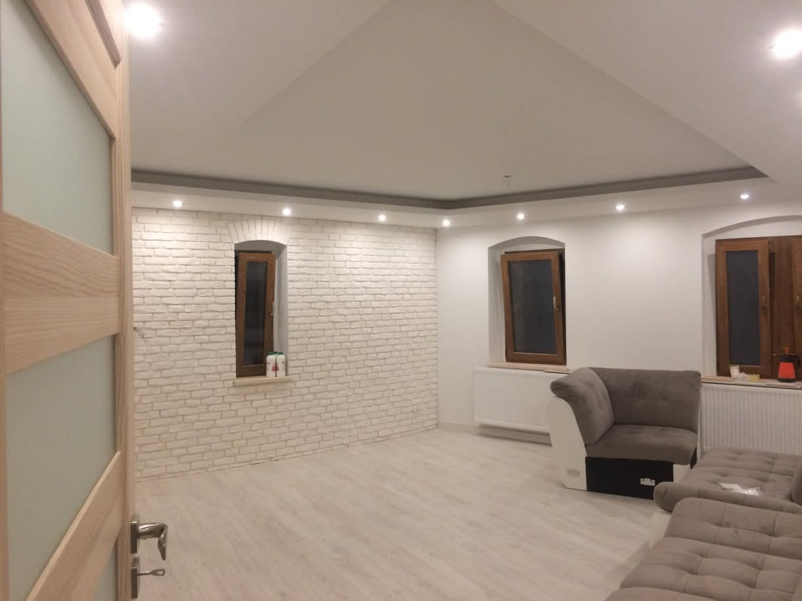
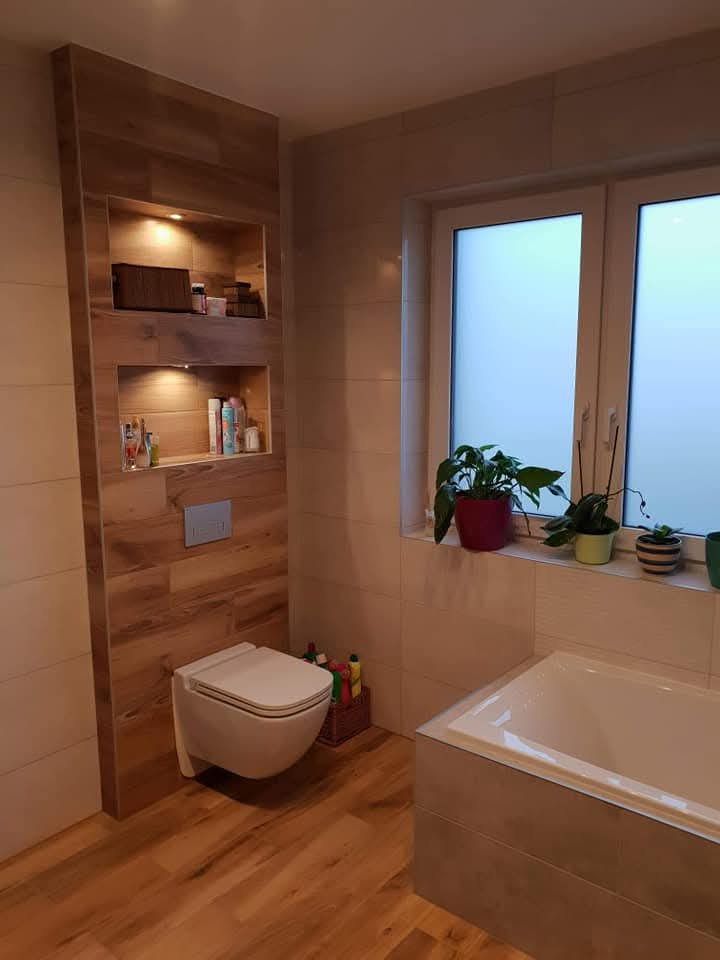
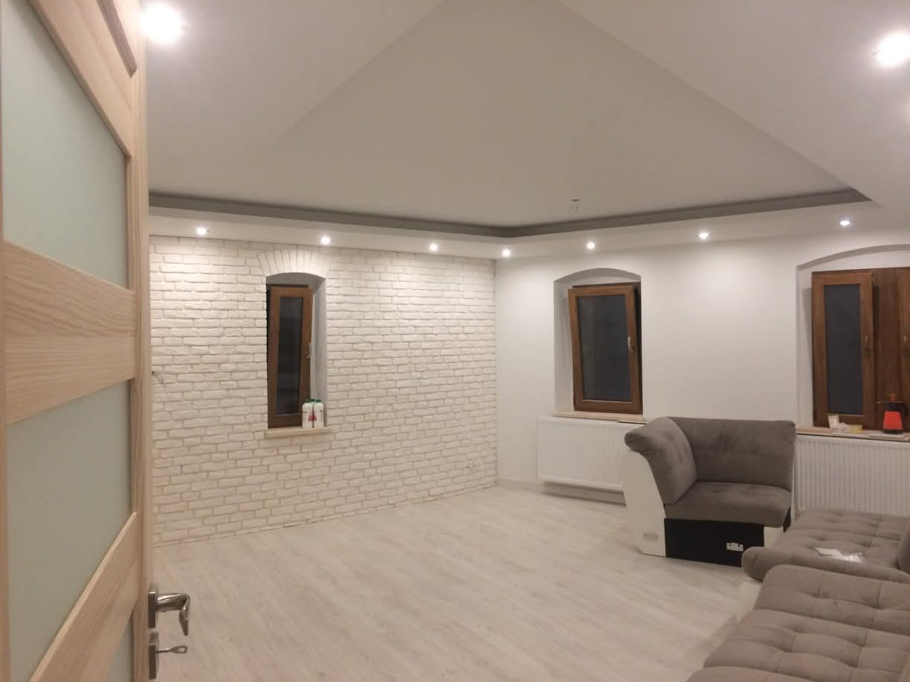
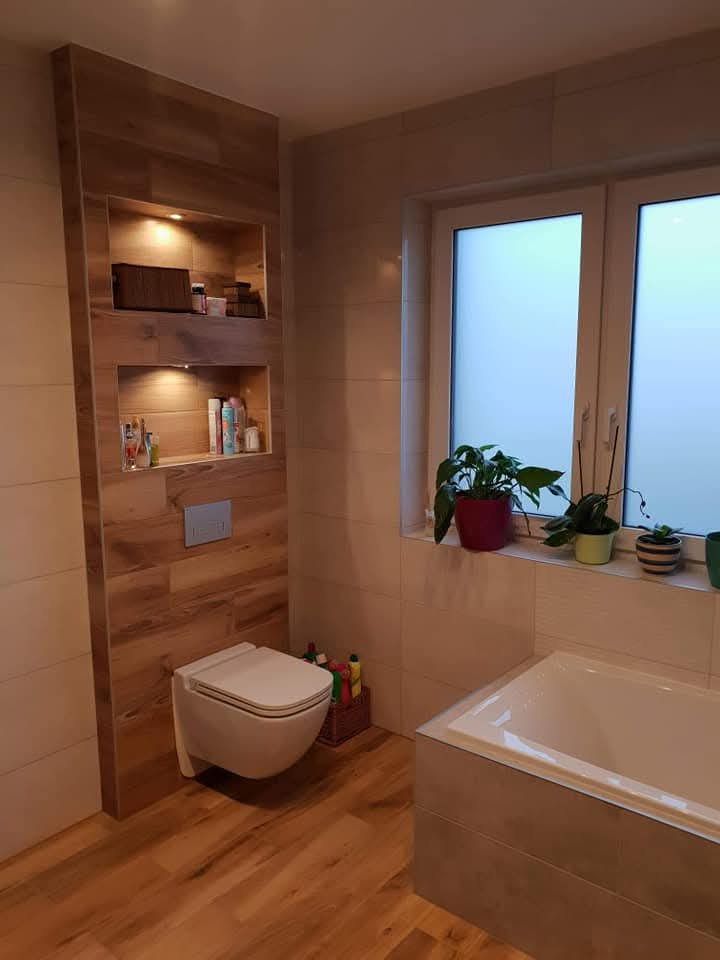
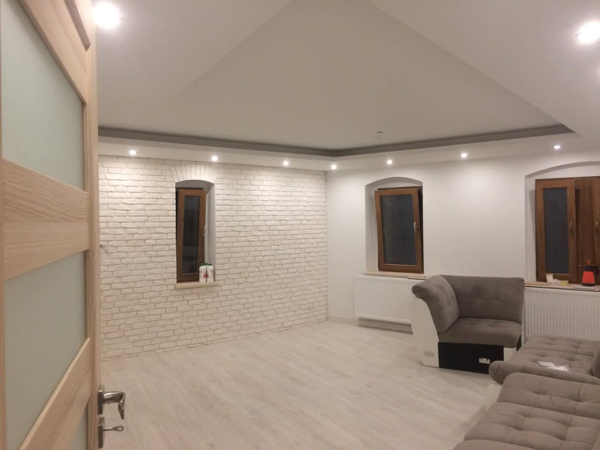
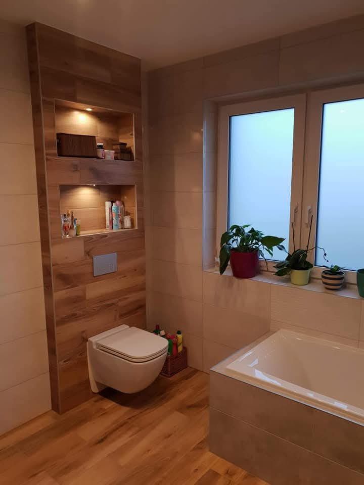

Realizacje


 



Kompleksowe wykończenia i docieplenia w Kłodzku. Darmowa wycena.
📞 609 267 559 📩 Napisz e-mailUsługi Remontowo-Budowlane Rafał Ciastek z siedzibą w Kłodzku oferują kompleksowe wykończenia wnętrz oraz docieplenia budynków na terenie powiatu kłodzkiego.
Stawiamy na solidność, terminowość i uczciwe podejście do każdego klienta.
Gładzie, malowanie, płytki, zabudowy GK oraz kompleksowe remonty mieszkań.
Styropian, elewacje oraz prace termomodernizacyjne domów jednorodzinnych.
Pełna realizacja od przygotowania po finalne wykończenie.


Stawiamy na dokładność i trwałość realizacji.
Realizujemy zlecenia zgodnie z ustalonym harmonogramem.
Bez ukrytych kosztów i nieprzyjemnych niespodzianek.
Zadzwoń lub napisz – odpowiadamy szybko i konkretnie.
📞 609 267 559
📩 rafalc51@wp.pl
ul. Szarego Floriana 4, 57-300 Kłodzko
NIP: 8831793013